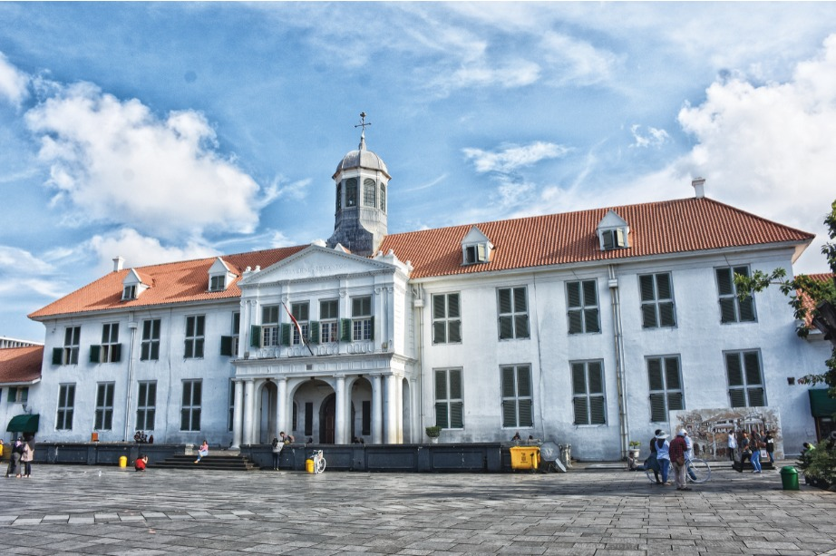

Bromo
Bromo, pesona gunung berapi di Jawa Timur, menawarkan panorama matahari terbit spektakuler dan pesona alam yang megah.

Kawah Ijen
Ijen, kawah indah di Jawa Timur, menampilkan panorama kawah biru, aktivitas tambang belerang, dan keindahan alam yang menakjubkan.

Kalem
Kalem, Kalimantan, memukau dengan pesona alamnya: hutan tropis, sungai mengalir, dan keberagaman flora serta fauna yang unik.

Kota Tua
Kota tua Jawa, dengan bangunan kolonial dan kearifan lokal, menciptakan atmosfer sejarah yang memesona dan memukau pengunjung.
Safari
Safari di Pulau Jawa, petualangan tak terlupakan melalui padang savana dan hutan yang melimpah, menyuguhkan pengalaman bertemu langsung dengan satwa liar.